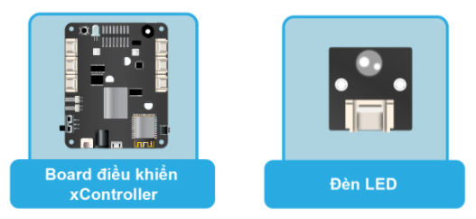

3. Bài học 2: Blink LED
Mục tiêu
Sau khi hoàn thành chương trình đầu tiên để làm quen với Arduino trong bài trước, bây giờ, chúng ta hãy thử học cách điều khiển module đèn LED. Trong bài tập này, chúng ta sẽ lập trình cho module đèn LED bật và tắt liên tục (còn gọi là blink) sau mỗi giây.
Kiến thức mới
Các yếu tố cấu thành một hệ thống điều khiển
- 3 yếu tố cơ bản cấu thành nên một hệ thống điều khiển là:
Input: Thông tin đầu vàoControlUnit: Trung tâm xử lý và điều khiểnOutput: Xuất ra thông tin hoặc hành động đã được lập trình sẵnTrong chương trình bật/tắt LED, chúng ta sẽ chỉ sử dụng Output mà không sử dụng Input. xController chính là Control Unit - sử dụng tín hiệu Digital để điều khiển module Output là đèn LED .
Tín hiệu Digital là gì?
Có 2 loại tín hiệu cơ bản mà chúng ta sẽ làm việc với chúng trong lập trình điện tử, đó là
tín hiệu Digitalvà tín hiệu Analog. Chúng ta sẽ tìm hiểu về Analog trong các bài học sau.
Tín hiệu Digitallà tín hiệu chỉ có 2 giá trị làTắt(còn gọi là LOW, 0V) vàBật(HIGH, 3.3V hay 5V tùy vào điện áp hoạt động của hệ thống, xController sử dụng 3.3V).Module LED hoạt động dựa vào tín hiệu Digital:
{kind=link}
{kind=link}
Kết nối phần cứng
{kind=link}
Thiết bị cần sử dụng
{kind=link}
Viết chương trình
Mở phần mềm Arduino IDE.
Copy đoạn code sau, click vào nút Verify để kiểm tra lỗi chương trình. Sau khi biên dịch không báo lỗi, bạn có thể nạp đoạn code vào board.
// Blink LED
// Bật tắt đèn LED sau mỗi 1 giây
int LEDPin = D1_1;
void setup() {
pinMode(LEDPin, OUTPUT);
}
void loop() {
digitalWrite(LEDPin, HIGH);
delay(1000);
digitalWrite(LEDPin, LOW);
delay(1000);
}
Sau khi chạy chương trình, bạn sẽ thấy đèn LED phát sáng và tắt liên lục mỗi 1 giây.
Giải thích chương trình
setup(){
}
Hàm setup() trong chương trình Arduino sẽ được gọi khi chương trình bắt đầu. Hàm này được sử dụng để khởi tạo giá trị của các biến hoặc các thư viện (bạn cần phải khởi tạo chúng trước khi sử dụng). Hàm setup() chỉ cần được gọi đúng một lần, sau mỗi lần board khởi động hoặc được reset.
loop(){
}
Hàm loop() sẽ thực hiện đúng như tên gọi của nó: lặp đi lặp lại liên tục các lệnh trong nó. Hàm này chứa các logic chính để để điều khiển hệ thống.
int LEDPin = D1_1;
Dòng lệnh này khai báo một biến có tên là LEDPin với kiểu dữ liệu int (integer: số nguyên), đồng thời gán giá trị là D1_1 (tương ứng với cổng mở rộng trên board mà bạn dùng để kết nối với module LED).
Lưu ý: Trên board xController có 6 cổng mở rộng, được đánh số từ 1 đến 6. Mỗi cổng gồm 4 đường tín hiệu:
2 đường tín hiệu dành cho nguồn điện là GND (nguồn âm, 0V) và VCC (nguồn dương, 3.3V)
2 đường tín hiệu logic, có thể sử dụng cho tín hiệu Digital (cả 6 cổng) hoặc Analog (chỉ hỗ trợ trên cổng 4, 5 và 6)
Do module LED sử dụng tín hiệu Digital và chỉ sử dụng 1 tín hiệu nên chúng ta khai báo chân IO (Input Output Pin) trong chương trình là D1_1. Ở các bài học sau, bạn sẽ sử dụng một số module dùng cả 2 chân tín hiệu như màn hình LCD hoặc 1 số module sử dụng tín hiệu Analog. Lúc này, bạn sẽ khai báo chân IO là A4_1, A5_1 hoặc A6_1 (A là analog).
pinMode(LEDPin, OUTPUT);
Câu lệnh này cấu hình chế độ hoạt động của chân IO (nối với module LED) thành OUTPUT để có thể điều khiển được.
Lưu ý: Một chân IO có thể được sử dụng với các chế độ hoạt động khác nhau:
Tín hiệu
DigitalhoặcAnalogCó thể làInput(nếu nhận thông tin từ các module như module cảm biến) hoặcOutput(nếu dùng để điều khiển bật tắt module gắn vào).
Do tính đa năng như vậy, nên các chân IO còn được gọi là General Purpose Input Output (các chân IO đa mục đích), hay gọi tắt là GPIO.
Câu lệnh pinMode() có cú pháp như sau:
Các tham số truyền vào:
pin: Số của chân Digital cần cấu hình
Mode: Khai báo chế độ hoạt động, có thể là INPUT , OUTPUT , hoặc INPUT_PULLUP (bạn sẽ tìm hiểu từng mode này trong các bài học)
digitalWrite(LEDPin, HIGH);
Xuất ra tín hiệu mức HIGH cho chân IO nối với module LED.
Nếu chân IO được khai báo mode hoạt động là OUTPUT bằng hàm pinMode(), thì điện áp xuất ra sẽ là 3.3V (hoặc 5V trên board sử dụng 5V) đối với mức HIGH, và 0V đối với mức LOW.
Câu lệnh trên sẽ xuất ra tín hiệu mức HIGH (3.3V). Khi đó, LED sẽ được bật do có điện.
Câu lệnh digitalWrite() có cú pháp như sau:
digitalWrite(pin, value)
Các tham số truyền vào:
pin: chân IO cần xuất tín hiệu
Value: giá trị cần xuất, HIGH hoặc LOW .
digitalWrite(LEDPin, LOW);
Tương tự, câu lệnh này xuất tín hiệu LOW cho chân IO nối với module LED, tương ứng với mức điện áp 0V. Khi đó, LED sẽ được tắt.
delay(1000);
Dừng chương trình trong một khoảng thời gian (đơn vị mili giây), 1000 mili giây tương ứng với 1 giây.
Câu lệnh delay() có cú pháp như sau:
delay(ms)
Tham số truyền vào:
ms: số mili giây chương trình tạm dừng.
Chúng ta cần tạm dừng chương trình trong khoảng thời gian 1 giây để có thể nhìn rõ được hiệu ứng bật và tắt đèn LED. Nếu không, đèn LED sẽ được bật và tắt một cách chớp nhoáng, mắt người không nhìn rõ được.
Vậy là bạn đã làm quen với khái niệm tín hiệu Digital và biết cách điều khiển module LED. Ở bài học sau, bạn sẽ kết hợp thêm các tín hiệu Input khác để làm những bài học nâng cao hơn.